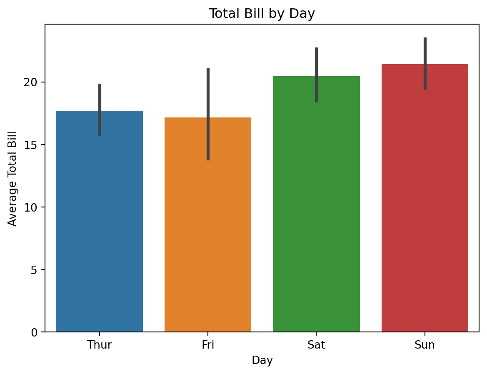
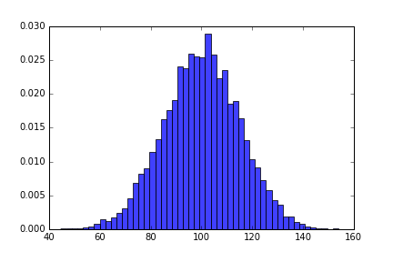
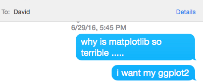
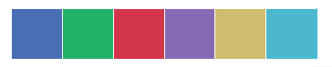
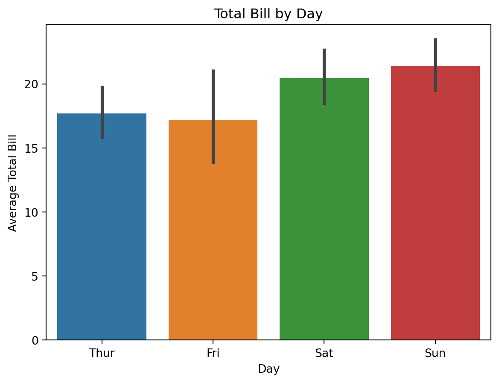
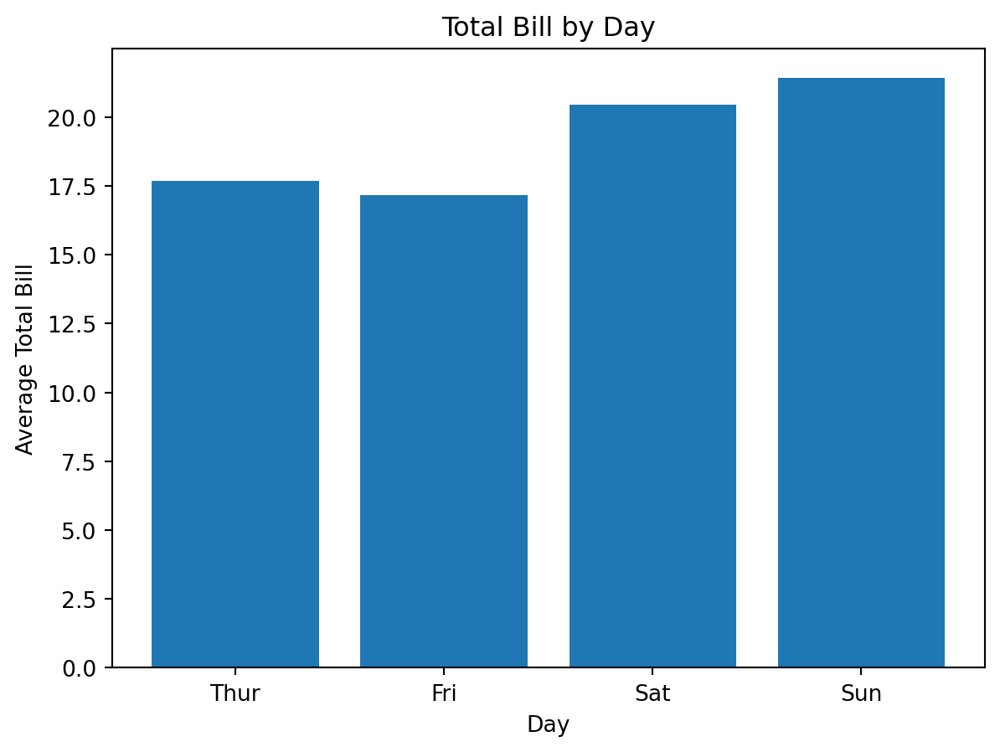
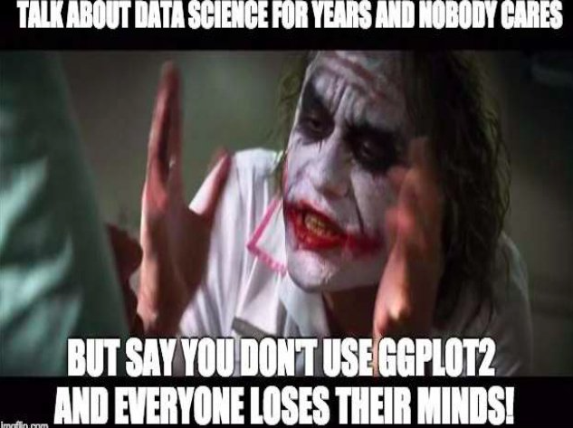

barplot = sns.barplot(x = "day", y = "total_bill", data = tips, order = ["Thur", "Fri", "Sat", "Sun"])
ticks = barplot.set(xlabel = "Day", ylabel = "Average Total Bill", title = "Total Bill by Day")
Coming into Metis, I knew one of the hardest parts would be switching from R to Python. Beyond simply having much more experience in R, I had come to rely on Hadley Wickham’s fantastic set of R packages for data science. One of these is ggplot2, a data visualization package. While there is a version of ggplot2 for python, I decided to learn the main plotting system in Python, matplotlib. Then I actually created and saw my first matplotlib graph:

I was horrified. I hated the color, the tick marks on all four sides of the plot, the white background. I promptly sent my brother the following texts:

Fortunately, he wrote back quickly suggesting I try seaborn, and my boot camp experience was saved. Six weeks later, I’ve become known in my Metis cohort as a seaborn evangelist. On presentation days at Metis, not a plot goes by without me marking down if it has base matplotlib aesthetics. I then follow up with the presenters afterwards, asking them why they don’t use seaborn. Usually this is followed by, “Is it to make me sad?”
Seaborn is a data visualization library in Python based on matplotlib. The seaborn website has some very helpful documentation, including a tutorial. And like the rest of your programming questions, anything you can’t find on that website can generally be found on the Stack Overflow page that is your first google result.
To get started with seaborn, you’re going to need to install it in the terminal with either pip install seaborn or conda install seaborn. Then simply include import seaborn as sns at the top of your python file.
One of the biggest advantages of seaborn is that its default aesthetics are much more visually appealing than matplotlib. If I import seaborn at the top of my python file and re-run the same exact commands that generated this post’s earlier plot, I now get this:

That’s right: you can run the exact same code you’ve already written and get prettier plots, no extra code or new syntax required. Recently I was horrified when a more senior data scientist, and much better Python programmer, presented with default matplotlib aesthetics. When I asked him why he didn’t use seaborn, he said “It’s on my list of things to learn, I just haven’t gotten around to it.” But this isn’t a valid excuse! All you need to do to start benefitting from seaborn is import it. Seaborn has much more to it besides these default aesthetics, but this feature already offers an exponential improvement.
If you want to change either the background or the colors of all your graphs, you can do so easily with two commands: sns.set_style and sns.set_palette.
sns.set_style takes one of five arguments: white, dark, whitegrid, darkgrid, and ticks. These are the five options for the background of your plot; the default one is darkgrid. Play around and see what you like best!
sns.set_palette will change the color palette. Use sns.palplot to print out a set of colors before you change your default colors to them. For example, try sns.palplot(sns.light_palette("green")). If you decide you like those colors, run sns.set_palette(sns.light_palette("green")) to change your graphs. Check out an extensive set of possible color palettes here. This page also gives a great tip on how you can divide color palettes into three different categories, and which one is appropriate for which type of data:
Qualitative color palettes, where you want to distinguish between distinct data that doesn’t have an ordering. These color palettes are just a variety of different colors.

The other big advantage of seaborn is that seaborn has some built-in plots that matplotlib does not. Most of these can eventually be replicated by hacking away at matplotlib, but they’re not built in and require much more code. Facet plots and regression plots are just two examples of those that take much longer to create with matplotlib; the regression plot does a regression line, confidence interval, and a scatter plot, all with one short function: sns.regplot(x="total_bill", y="tip", data=tips)!
Making plots in seaborn also generally matches your intuition for what the syntax would be. For example, to make a barchart with confidence intervals, you can run the following code (having loaded the tips dataset with tips = sns.load_dataset("tips")):
barplot = sns.barplot(x = "day", y = "total_bill", data = tips, order = ["Thur", "Fri", "Sat", "Sun"])
ticks = barplot.set(xlabel = "Day", ylabel = "Average Total Bill", title = "Total Bill by Day")
Meanwhile, in matplotlib you actually have to create a new dataset with your means (and standard deviations if you want confidence intervals). Matplotlib also won’t accept categorical variables as the variable for the x-axis, so you have to first make the bar chart with numbers as the x-axis, then change the tick-marks on the x-axis back to your original categories. You also have to write three lines instead of one for changing the x-label, y-label, and title. Here’s the code for making the graph in matplotlib, which doesn’t even include re-ordering the x-axis or the confidence intervals:
total_bill_by_day = tips.groupby("day").mean(numeric_only=True)
ax = plt.bar([1, 2, 3, 4], total_bill_by_day["total_bill"], align = "center")
plt.xticks([1, 2, 3, 4], total_bill_by_day.index)
plt.xlabel("Day")
plt.ylabel("Average Total Bill")
plt.title("Total Bill by Day")
plt.show()
This is far from an unusual case. While seaborn certainly does not have its own plots for everything, it has a lot of the ones you’d typically use for exploratory purposes.
I come from a family tradition of caring too much about plotting frameworks. Earlier this year, my brother David Robinson, a data scientist at Stack Overflow, became part of a flare-up in a long-running debate on ggplot2 versus base R graphics.
In February, JHU professor Jeff Leek wrote a blog post entitled “Why I don’t use ggplot2”. The post wasn’t even out two days before David followed up with a post of his own on why he uses ggplot2. Soon others joined the fray. While it settled down after a month, the battle still simmers under the surface:

I bring this up not only to illustrate some family resemblance, but also to set up a contrast to the seaborn/matplotlib decision. While Base R graphics and ggplot2 require completely different syntax, seaborn is based on matplotlib, and so starting to use seaborn is as easy as importing it.
I think every python programmer can benefit from using seaborn for visualizations. The advantage of matplotlib is that you can do essentially anything you want with it by building a plot piece-by-piece. You certainly can make beautiful, professional plots in matplotlib. Seaborn doesn’t take away any of that, but rather adds some nice default aesthetics and built-in plots that complement and sometimes replace the complicated matplotlib code you may already be writing.
As someone who started off using seaborn right away and has been using it for less than two months, I’m far from an expert on seaborn or matplotlib. But I hoped this post would be helpful for new Python users or reluctant seaborn adapters for the great advantages I see in Seaborn.